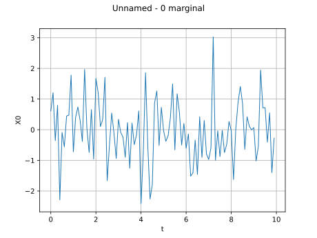
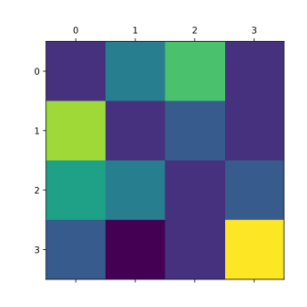

Stochastic process modeling¶



Manipulate a time series


Create a process from random vectors and processes
Create a process from random vectors and processes

Sample trajectories from a Gaussian Process with correlated outputs
Sample trajectories from a Gaussian Process with correlated outputs



Create a discrete Markov chain process
Create a discrete Markov chain process